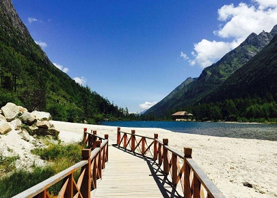

morly旅游圈
毕棚沟位于四川省阿坝藏族羌族自治州理县朴头乡梭罗沟境内，是国内非常知名的红叶观赏圣地。世界自然遗产、世界生物圈保护区网络、国家AAAA级旅游景区、国家级生态旅游示范区，四川省级生态旅游示范区。
毕棚沟是一个集原生态景观博览、登山穿越、极地探险、滑雪滑冰、休闲度假于一体的大型原生态旅游风景区。毕棚沟以其优美的自然风光、完美的自然生态景观、优良的生态环境著称。景区内红叶、杜鹃花种类繁多，森林原始、瀑布飞挂、冰川奇特。毕棚沟以其优美的自然风光、完美的自然生态景观、优良的生态环境著称。景区内红叶、杜鹃花种类繁多，森林原始、瀑布飞挂、冰川奇特。毕棚沟被比作四姑娘山的美丽背影。这是个五彩斑斓的世界，浓绿的树，深红的叶，青青的湖，湛蓝的天，纯白的雪；这是个多姿多彩世界，险峻奇峰，一道冰川，人间寺庙。 居着藏、羌、汉三个主体民族，据史料记载，理县所居嘉绒藏族公元四世纪从西藏迁陟而来，距今已有1300多年的历史。羌族素有民族活化石之称，公元前四世纪已活跃在岷江上游。千百年来，各民族不但完整地保存和延续着本民族的语言文字、宗教信仰、文化习俗、生活方式，而且形成了独特的共居文化。藏羌民族锅庄，正是这种独特共居文化的经典，这种民族自娱性舞蹈是理县古老悠久民族文化之树上最璀烂的明珠，无论男女老少，无论藏族、羌族还是世居的汉族都喜欢。逢年过节，婚筵团聚人们点燃篝火，杀羊烤肉，挥舞串铃皮鼓，围着咂酒载歌载舞，通霄达旦，由此延伸着丰富的民族内涵。美丽的杂谷脑峡谷被中外学者誉为天然民俗博物馆和藏羌民族文化风情走廊。
原始生态景区位于理县朴头乡境内，四姑娘山北麓，距成都198公里，距县城20公里，景区纵深约45公里，宽约4公里，海拔高度2000~5000米，幅员180平方公里。 毕棚沟位于阿坝藏族羌族自治州理县境内，国家4A级景区。地处国家级人与自然保护圈—米亚罗自然保护区的核心区域，是邛崃山系大熊猫走廊世界自然遗产的重要组成部分，东与卧龙自然保护区接壤，南接东方圣山四姑娘山。
毕棚沟位于四姑娘山背面，地处中亚热带季风气候向大陆性高原气候过渡地区，早晚凉，中午热，蓝天白云，晚上星光灿烂，空气新鲜。由于高原地形，气候冬寒夏凉，常年干燥，雨量稀少，年降水量1100-1600毫升，降水主要集中在雨季（5月），山地自然垂直带谱很有代表性。且气温变化剧烈，四季不甚明显，日温差较大，有时达20C以上。年蒸发量1500毫米，无霜期220天，年平均气温12.2°C，全年光照2214小时
毕棚沟的景色具有多种特色，多类型的景观设置让毕棚沟更加吸引人。 一、奇峰、异石：女皇峰、才女十二峰、杜鹃山、燕子岩窝、熊猫岭、神鹿峰、雄鹰岩、狮子守皇峰、野牛岭、磐羊峰、通天门、天狗望月、玉兔问天、镇山将军、下凡 仙龟、仰面长空、仰天长啸、鲲鹏待月、包公岩（脸普岩）二、冰川：倒沟万年冰川、叉子口冰川、燕子岩冰川、大雪塘冰峰三、水群：美人链瀑布、神鹿峰千丈瀑、大草片珍珠瀑、座棚大瀑布、水帘洞、冒泉、女皇海、贝母海、大水海子、银厂沟、倒沟四、棚子：熬灶、寇乡约棚子、牛肉棚子、过年棚子、凛棚子、座棚、豹子五、滩坪：龙王塘、湿地滩、草莓滩、大雪塘、寇乡约塘、草海六、森林：岷江柏林、冷杉林、箭竹坡、桦林道、杜娟山七、其它：迎客松、二道桥、观音庙、庄房
如果是成都出发：第一个参考路线，第一天早8点20从成都到米亚罗，下午回毕棚沟（应该只有包车或组合车），第二天一早出发进沟，一点左右打车回理县，早的话有有回成都的，没得坐到都江堰再坐动车回成都。这是一条，省去了中间的桃坪羌寨和甘堡藏寨。第二条路线，你买到桃坪羌寨，看了再到甘堡藏寨，晚上到理县住宿，第二天行程一样。建议路线：成都-桃平羌寨-毕棚沟-米亚罗-理县-成都
毕棚沟
毕棚沟位于四川阿坝州理县境内，四姑娘山的北麓，传说是四姑娘山的背影，以优美的自然风光、完美的自然生态、优良的生态环境而著称。
【地址】阿坝藏族羌族自治州理县朴头乡庄房村88号
【门票】135元
内容整理至网络，如有侵权，请联系我们！1255394075@qq.com
